Откат системы Ubuntu
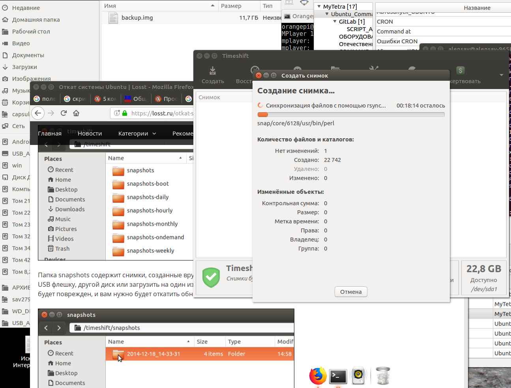
Система Март 30, 2016 11 admin
Было бы неплохо иметь возможность спокойно обновлять систему или попробовать новую версию дистрибутива не боясь проблем и ошибок, зная что вы всегда можете откатить Ubuntu назад к прежнему состоянию.
В этой статье мы рассмотрим инструмент, который позволяет сделать снимок состояния системы Ubuntu в любое время. TimeShift очень похож на функцию восстановления системы в Windows, программа позволяет восстановить состояние ubuntu. Сначала вы создаете снимок, можете запланировать автоматическое создание снимков через заданные промежутки времени, а затем просто восстанавливаете систему.
TimeShift защищает только системные файлы и настройки, но не восстанавливает пользовательские данные, такие как фото, музыка, документы. Если вам нужно делать резервную копию именно таких файлов, придется использовать другие инструменты.
Программа недоступна в официальных репозиториях, поэтому для ее установки нужно будет подключить PPA. Для этого сначала откройте окно терминала сочетанием клавиш Ctrl+Alt+T. Дальше для добавления PPA выполните следующие команды:
sudo apt-add-repository -y ppa:teejee2008/ppa
$ sudo apt-get update
Для выполнения команд понадобятся права суперпользователя, поэтому вам нужно будет ввести пароль. После завершения вы можете переходить к установке TimeShift, для этого выполните:
sudo apt-get install timeshift
После ввода команды наберите пароль и нажмите Enter:
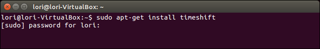
Когда установка завершится, можете закрыть окно терминала:
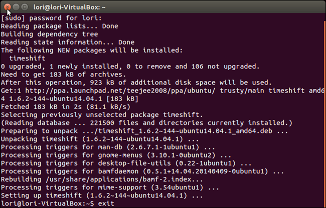
Теперь рассмотрим как отменить изменения ubuntu. Открыть TimeShift можно из меню Dash:
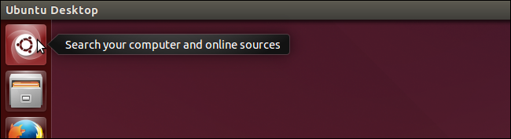
Введите TimeShift в строке поиска. В результатах вы увидите значок запуска TimeShift:
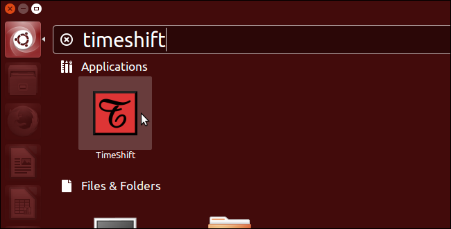
Для работы программы нужны права root, поэтому после запуска появится окно с запросом пароля. Введите его и нажмите Ok:
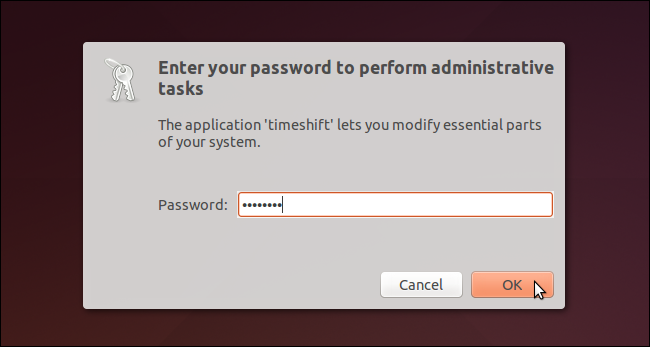
После запуска программы вы увидите главное окно. Здесь есть основные инструменты для работы со снимками состояния системы и восстановления. В раскрывающемся списке Устройство резервного копирования, вы можете выбрать другой диск или раздел для сохранения резервных копий.
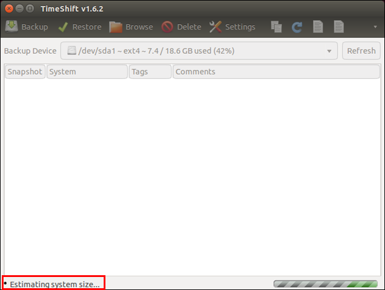
Объем дискового пространства необходимый для создания снимка системы Ubuntu отображается в строке состояния. Снимки сохраняются на выбранном устройстве, поэтому убедитесь что у вас достаточно места. Чтобы создать снимок нажмите кнопку Backup:
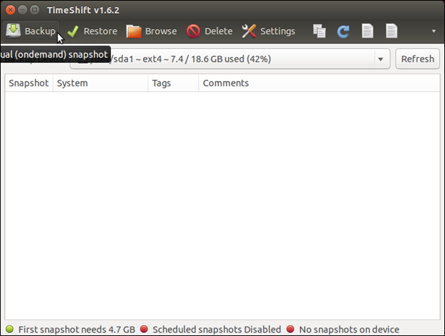
Во время создания снимка в строке состояния отображается статус Synching files...:
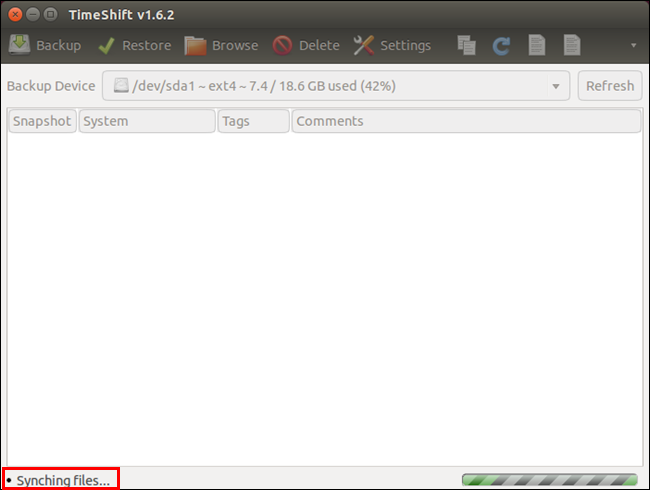
После завершения снимок появится в списке, будет указанна дата создания, название и версия системы. Вы всегда можете выполнить сброс настроек ubuntu с помощью этого снимка. В строке состояния теперь отображается кроме свободного места , дата последнего снимка:
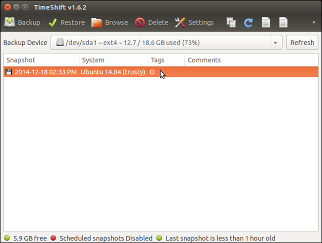
Если навести курсор на раскрывающейся список Backup Device, можно посмотреть в какую папку сохраняются резервные копии:
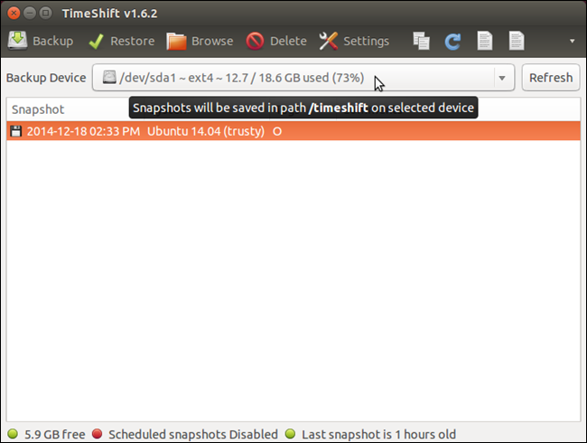
Каталог TimeShift содержит как готовые, уже сделанные снимки, так и запланированные, которые мы рассмотрим ниже:
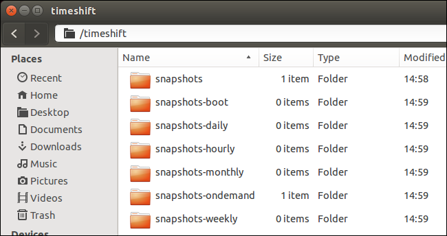
Папка snapshots содержит снимки, созданные вручную. Рекомендуется скопировать снимок на USB флешку, другой диск или загрузить на один из облачных сервисов, на случай если диск будет поврежден, и вам нужно будет откатить обновления Ubuntu.
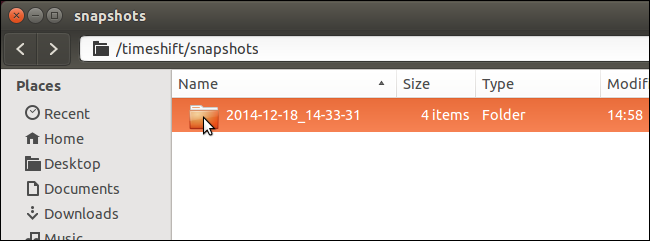
Вы можете посмотреть содержимое снимка нажав кнопку Browse:
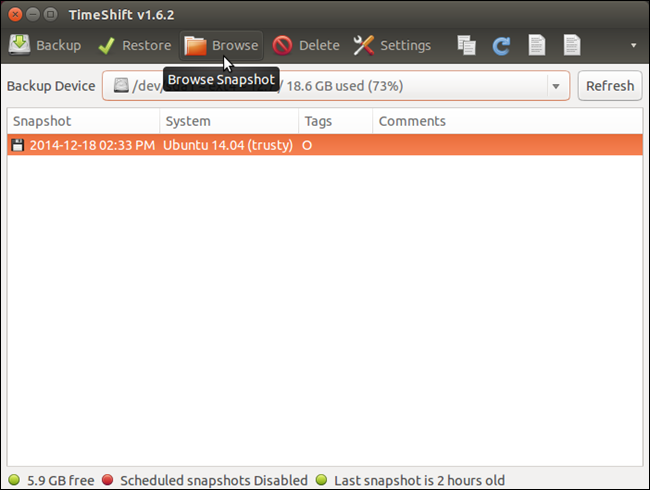
Каталог снимка будет открыт в файловом менеджере и вы увидите сохраненную корневую файловую систему, без файлов пользователя:
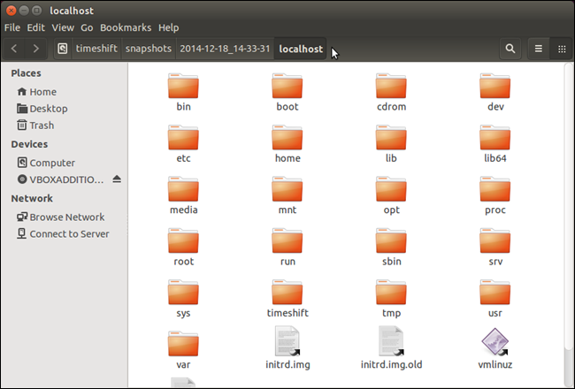
В программе можно настроить различные параметры. Например, автоматическое резервное копирование и автоматическое удаление старых снимков. Для открытия настроек нажмите кнопку Settings на панели инструментов:
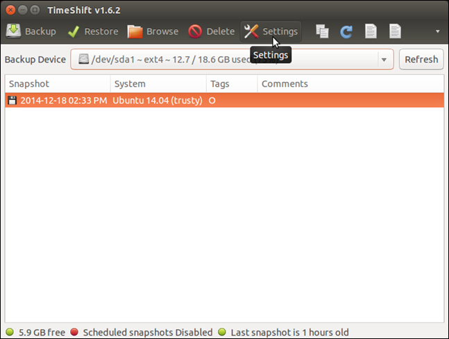
Вкладка Schedule позволит настроить время когда будут выполняться снимки. Снимки можно делать раз в час, день, неделю или месяц, а также при каждой загрузке. Просто отметьте нужную галочку:
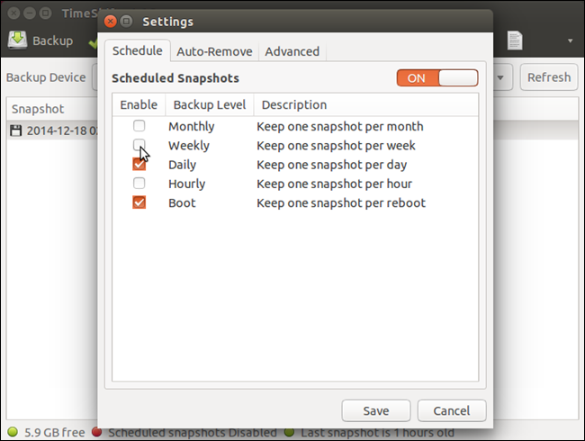
Соответственно на вкладке Auto-remove вы можете настроить когда будут удаляться старые снимки. Можно настроить снимки какой давности нужно удалять для каждого типа снимков. Давность указывается в поле Limit.
Также можно удалять снимки любой давности когда уже не осталось слишком мало места:
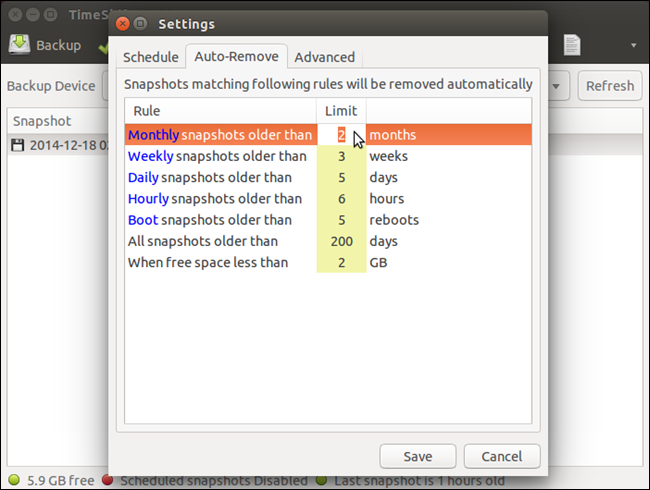
На вкладке Advanted вы можете исключить из снимка определенные файлы или каталоги, которые не нужно сохранять.
После завершения настройки нажмите кнопку Save:
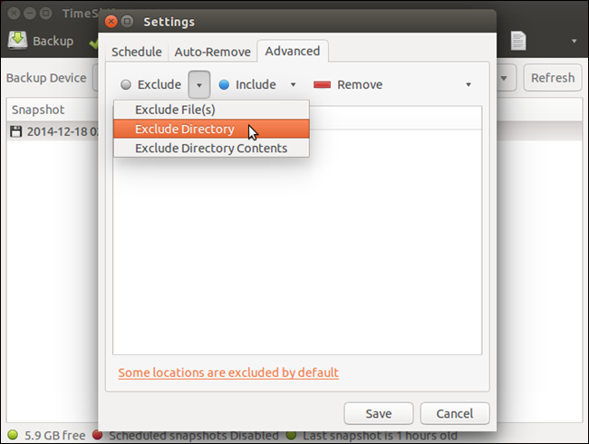
Для того чтобы выполнить откат системы Ubuntu просто выберите нужный снимок и нажмите кнопку Restore:
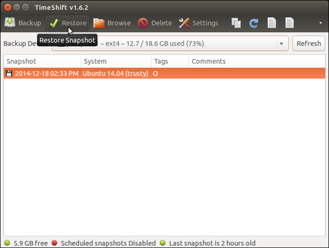
В открывшимся окне на вкладке Target вы можете выбрать устройство, на которое нужно восстановить систему. Вы можете выбрать то же самое устройство или же развернуть систему на другом диске, таким образом, это будет не откат системы ubuntu, а установка системы на другой диск. Если навести указатель мыши на устройство, можно посмотреть более подробную информацию о нем.
Выберите устройство для восстановления корневой файловой системы, а затем устройство для установки загрузчика:
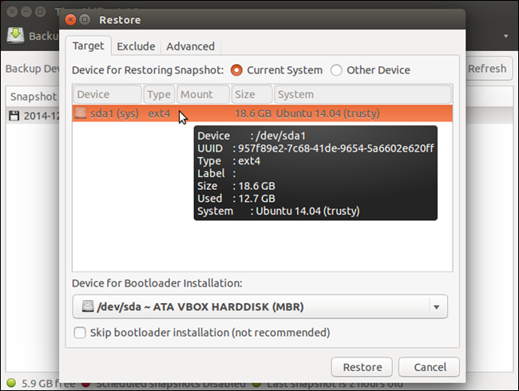
На вкладке Exclude можно выбрать файлы и папки, для которых не нужно восстановить состояние ubuntu и нужно оставить такими как они есть сейчас:
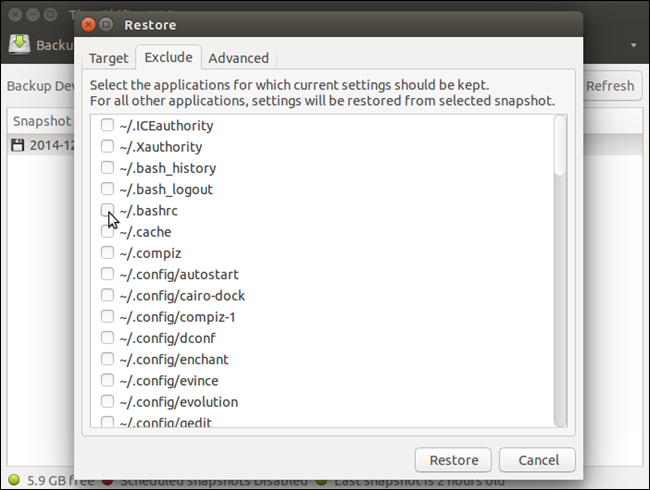
На вкладке Advanted вы можете исключить определенные файлы, каталоги и их содержимое из снимка.
После завершения настроек нажмите кнопку Restore чтобы отменить изменения ubuntu:
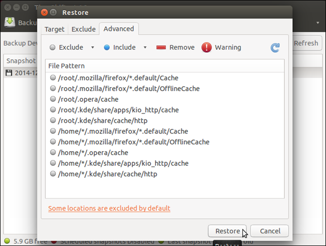
TimeShift это очень полезный инструмент, если вы любите экспериментировать с обновлениями системы. Он очень пригодится если что-то пойдет не так. Также, как и в Windows, вы можете просто выполнить откат системы Ubuntu к предыдущему состоянию и дальше экспериментировать не переустанавливая систему. Вы даже можете откатить ubuntu до первоначального состояния, просто создав снимок сразу после установки.